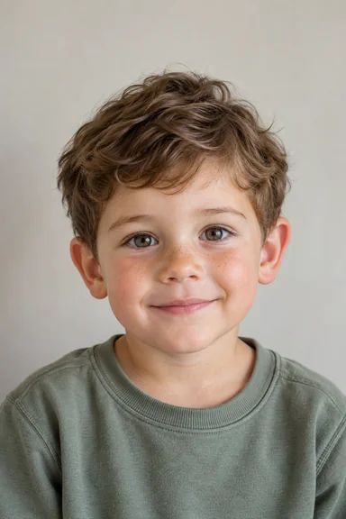

МАТЕРИАЛЫ ДЛЯ БУДУЩИХ ПОСТЕРОВ
12 разных лиц.
Для 12 ваших макетов.
6 мальчиков и 6 девочек. У каждого портрета указаны возраст и рекомендованный сюжет.
Вымышленные персонажи · Создано с помощью ИИ
Скачать все 12 портретов ↓12 PNG · 1024 × 1536 · ZIP 26,3 МБ